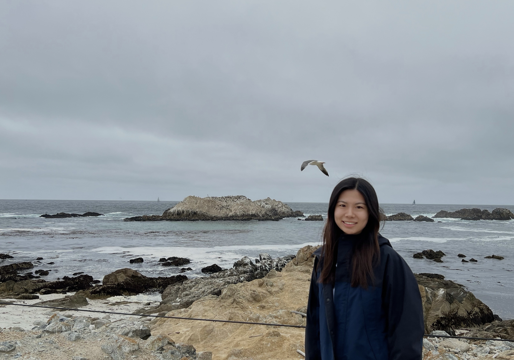
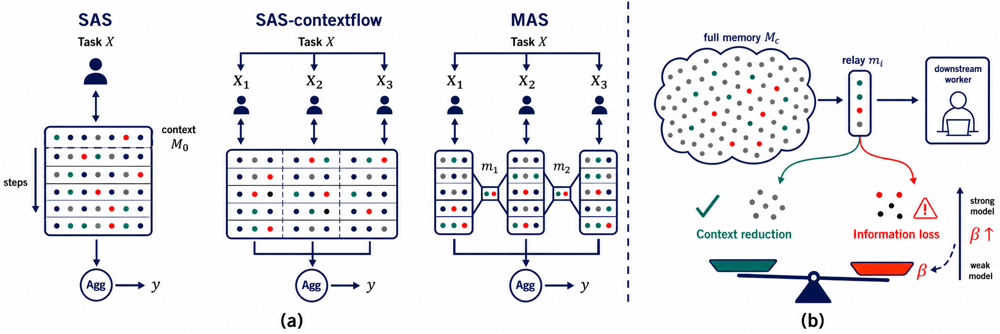
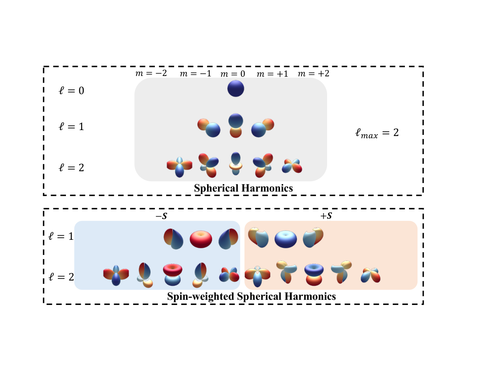
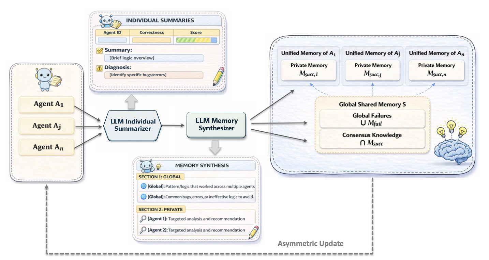
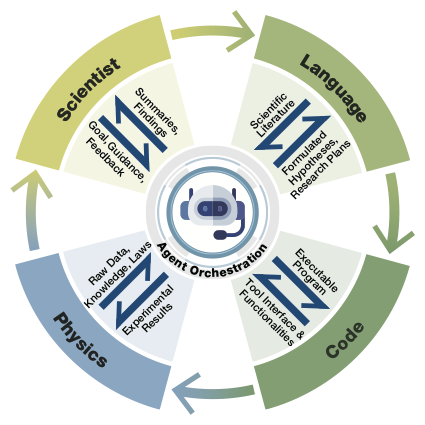
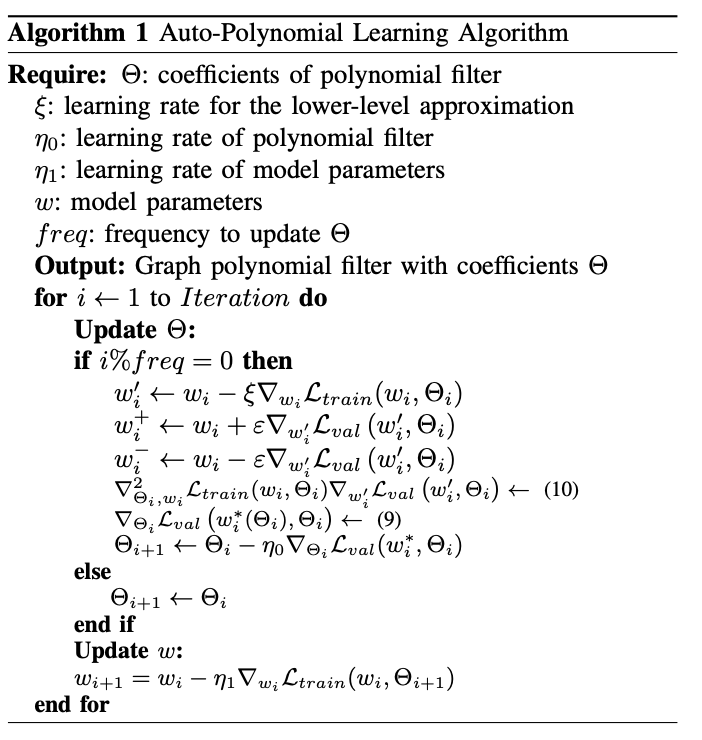
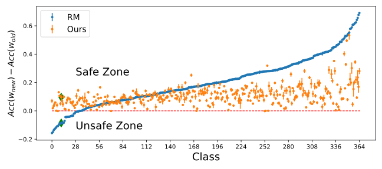

Wendi Yu

I am a Ph.D. student in Computer Science at Texas A&M University, advised by Prof. Shuiwang Ji. Previously, I received my bachelor’s degree in Software Engineering from Tongji University and worked as a research intern with Prof. Xiaorui Liu at North Carolina State University.
My research focuses on efficient diffusion language models and agentic reasoning. I investigate the principles that enable effective reasoning within language models and collaboration across agents, and develop methods for applying these capabilities to scientific discovery.
news
- Two papers accepted at NeurIPS 2026, including my first-author work on multi-agent systems. [Multi-agent systems] [Equivariant networks]
- Joined as a Graduate Research Fellow at the Texas A&M Institute of Data Science (TAMIDS).
- Our collaborative work on deep learning and amyotrophic lateral sclerosis was published in Brain. [Paper]
- My first-author paper, “Automated Polynomial Filter Learning for Graph Neural Networks,” was accepted at IEEE BigData 2024. [Paper]
- Started my Ph.D. in Computer Science at Texas A&M University.
Selected Publications
(* equal contribution)





Multi-Agent Asymmetric Memory Evolution for Algorithm Design
Manuscript, 2026


Autonomous Agents for Scientific Discovery: Orchestrating Scientists, Language, Code, and Physics
Preprint, arXiv:2510.09901, 2025




Model Developmental Safety: A Safety-Centric Method and Applications in Vision-Language Models
NeurIPS AFM Workshop, 2024